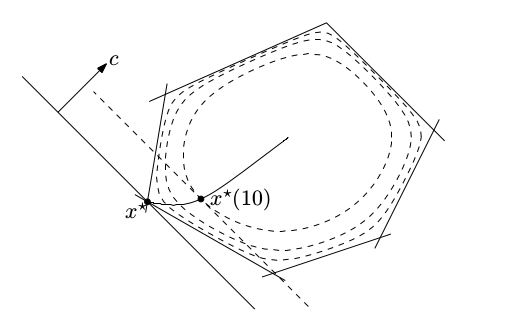
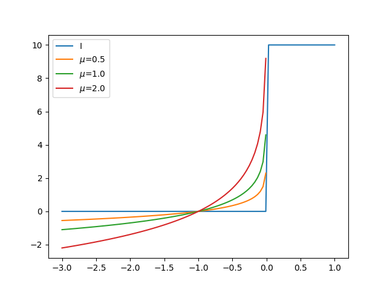

[Newton yöntemi özeti atlandı]
Şimdiye kadar kısıtlanmamış Newton yönteminden bahsettik [1, 53:18]. Şimdi lineer olarak kısıtlanmış, $Ax=b$ ile, olan duruma bakalım, çünkü ileride faydalı olacak.
En bariz yaklaşım $Ax=b$'nin bir doğrusal (affine) uzay yaratması, ve optimizasyonun bu daha ufak uzayda iş yapması. Bir değişken değişimi yaparız, $x = Fy + x_0$, ki $F$, $A$'nin sıfır uzayını kapsıyor, ardından optimizasyon problemini $y$ bazlı bir probleme indirge. Bu yaklaşıma "indirgenmiş uzay yaklaşımı" deniyor. Tarif edilen gayet doğal, basit bir yaklaşım aslında, fakat bir bedeli de var. Eğer orijinal problem seyrek ise değişim sonrası çok miktarda yapı kaybı (yaı seyreklik) olacak.
Bir diğer seçenek eşitlikle kısıtlanmış Newton (equality constrained Newton). Bu yöntemle $x^+ = x + t v$ adımında $v$ karesel yaklaşıksallamanın çözümü, fakat bu çözüm sınırlanmış bir problemin çözümü, bir sonraki $x^+$'yi olurlu halde tutacak bir sınırlama bu.
Çözülen problem
$$ v = \arg\min_{Az = 0} \nabla f(x)^T (z-x) + \frac{1}{2} (z-x)^T \nabla^2 f(x)(z-x) $$
Üstteki $x^+$'i olurlu kümede tutar çünkü
$$ Ax^+ = Ax + tAv = b + 0 = b $$
KKT koşulları üzerinden çözüm
$$ \left[\begin{array}{cc} \nabla^2 f(x) & A^T \\ A & 0 \end{array}\right] \left[\begin{array}{c} v \\ w \end{array}\right] = - \left[\begin{array}{c} \nabla f(x) \\ Ax - b \end{array}\right] $$
ile belirtilebilir. KKT bölümünde karesel problem örneğindeki gördüğümüz $Q$ burada $\nabla^2 f(x)$ oluyor, atılan adım sonrası gelinen yerin ne olacağı da kısıtlama içinde görülebilir.
Olurlu noktadan basliyorsak, ozel durum $Ax = b$, tabii o zaman
$$ \left[\begin{array}{cc} \nabla^2 f(x) & A^T \\ A & 0 \end{array}\right] \left[\begin{array}{c} v \\ w \end{array}\right] = - \left[\begin{array}{c} \nabla f(x) \\ 0 \end{array}\right] $$
O zaman bariyer metotu nedir? Bu metotla yine Newton metotunu uzatacağız, ve eşitsizlik olan problemlerle uğraşacağız.
$$ \min_x f(x) \quad \textrm{öyle ki} $$ $$ Ax = b $$ $$ h_i(x) \le 0, \quad i=1,..,m \qquad (3) $$
Kriter dışbükey, sınırlamalar lineer, ve dışbükey eşitsizlik sınırlamaları, $h_i(x) \le 0$ ile.
Bariyer metotu eşitsizliklerle başetmenin bir yolu. Eşitsizlik içeren programların en büyük problemi sınırlarda ne yapılacağına karar vermek, yani olurlu kümenin sınırlarında. Başetmek için olurlu küme $C \equiv { x: h_i(x) \le 0 , i=1,..,m}$
$$ \min_x f(x) + I_C(x) $$ $$ Ax = b $$
ile kritere dahil edilir, ki $I_C$ göstergeç fonksiyonudur. Ana fikir sınır noktalarında işler zorlaşıyorsa niye oralardan uzak durmuyoruz? Fakat göstergeç fonksiyonu ile çalışmak zor, onu da yaklaşıksal olarak temsil ederiz, işte bariyer fonksiyonu budur. Öyle bir fonksiyon seçeriz ki sınırlarda aşırı büyük değerler vererek bizi minimizasyon bağlamında oralardan "geri iter". Sanki sınırlara bir manyetik alan koyuyoruz, oralara yaklaşınca geri itiliyoruz.
Tabii bir yandan Newton metotu da kullanabilmek istiyoruz, ideal olarak pürüzsüz bir metot olursa elimizde iyi olur. Log bariyer fonksiyonu böyle bir fonksiyon
$$ \phi(x) = -\sum_{i=1}^{m} \log(-h_i(x)) \qquad (1) $$
Böylece ana problemi şu hale getirebiliriz,
$$ \min_x f(x) + \frac{1}{t} \phi(x) \quad \textrm{öyle ki} $$ $$ Ax = b $$
ki $t>0$. Görülen $1/t$ dışarıdan bizim tanımladığımız bir parametre, optimizasyonu ayarlamak için kullanıyoruz onu. Eğer $t$ küçükse, sıfıra yakınsa o zaman bariyer baskın haldedir (daha büyüktür), tabii o zaman sınırlardan kaçmak optimizasyon için daha önemli hale gelir. Eğer $t$'yi büyütürsek bu "orijinal kriter $f$'ye daha fazla önem ver" demektir.
Dersin geri kalanında üstteki format yerine alttaki ile çalışacağız, üstteki ile aynı,
$$ \min_x t f(x) + \phi(x) \quad \textrm{öyle ki} $$ $$ Ax = b \qquad (2) $$
Log-Bariyer Calculus
(1) için türev
$$ \nabla \phi(x) = - \sum_{i=1}^{m} \frac{1}{h_i(x)} \nabla h_i(x) $$
Hessian
$$ \nabla^2 \phi(x) = \sum _{i=1}^{m} \nabla h_i(x) \nabla h_i(x)^T - \sum _{i=1}^{m} \frac{1}{h_i(x)} \nabla^2 h_i(x) $$
Örnek
Pek çok yerde kullanılan bir eşitsizlik görelim, mesela bütün $x_i < 0$ olduğu bir durum, yani $h_i(x) = -x$. O zaman bariyer neye benzer?
$$ \phi(x) = - \sum _{i=1}^{n} \log x_i $$
$$ \nabla \phi(x) = - \left[\begin{array}{c} 1/x_1 \\ \vdots \\ 1/x_n \end{array}\right] = - X^{-1} \textbf{1} $$
Burada $X$ matrisi
$$ X = \mathrm{diag}(x) = \left[\begin{array}{ccc} x_1 & & \\ & \ddots & \\ & & x_n \end{array}\right] $$
ve $\textbf{1}$ sembolu tamamen 1'lerden oluşan matris.
Hessian
$$ \nabla^2 \phi (x) = \left[\begin{array}{ccc} 1/x_1^2 & & \\ & \ddots & \\ & & 1/x_n^2 \end{array}\right] = X^2 $$
Problemi yaklaşık olarak temsil ettik. Uygun şartlarda problem (2)'nin çözümü vardır. Neden olduğunu görmek zor değil, $\phi$ beni sınırlardan uzak tutar, ve hedefim $f$'ye ulaşırım, lineer diğer sınırları dikkate alarak tabii. Gidis yolu neye benzerdi?
Merkezi gidiş yolu, (1) için KKT koşulları üzerinden gösterilebilir? Bu yol (1) probleminin $t$ üzerinden fonksiyon haline getirilmiş çözümüdür. Her $t$ için (1)'i çözebilirim, çözüme $x^*(t)$ derim, ve $x^*$'ye $t$'nin bir fonksiyonu olarak bakınca, bariyer metot çerçevesinde, ortaya çıkan çözüm serisine merkezi gidiş yolu denir. Her $t$ için (1)'in çözümünü KKT koşulları üzerinden temsil edebilirim, böylece her adımda $x^*(t)$'nin optimal olması için ne gerekir sorusunu formülize etmiş oluyorum. Önce KKT ana olurluk şartları
$$ A x^* = b, \quad h_i(x^*(t)) \le 0 $$
Geri kalanlar, önce Lagrangian
$$ t f(x) + \phi(x) + w^T (Ax - b) $$
Bu Lagrangian'in $x$ üzerinden gradyanını alıp sıfıra eşitlersem durağanlık şartını elde ediyorum.
$$ t \nabla f(x^*(t)) - \sum_{i=1}^{m} \frac{1}{h_i(x^* (t))} \nabla h_i(x^*(t)) + A^T w = 0 $$
Durağanlık için gradyan kullanmak yeterli çünkü tüm fonksiyonlar dışbükey ve pürüzsüz.
Üstteki problemi bazı herhangi bir $w$ için çözebilirsem o zaman merkezi gidiş yolundaki bir çözümü her $t$ için karakterize etmiş olurum. Umudumuz o ki $t$'yi sonsuzluğa doğru iterken gördüğümüz KKT koşullarının ima ettiği çözümler orijinal problemdeki sonuçlara yaklaşsın. Çünkü bariyer fonksiyonunu $1/t$ ile çarptım ve $t$'yi büyüttükçe çarpım gösterge fonksiyonuna yaklaştığını biliyorum, o zaman optimizasyonu yaparken $t$'yi büyüttükçe orijinal problemin gerçek sonucuna yaklaşmış olurum.
Şimdi bir lineer program üzerinden merkezi gidiş yoluna bakalım. Basit bir LP, eşitlik şartlarını attım,
$$ \min_x c^T x, \quad \textrm{öyle ki} $$ $$ Dx \le e $$
Bariyer olarak
$$ \min_x t c^T x - \sum _{i=1}^{m} \log(e_i - d_i^T x) $$
Bu problemi belli bir $t$ için çözersem, sonra $t$'yi büyütürsem ve o yeni $t$ için çözersem, bunu ardı ardına yaparsam, umudum o ki orijinal LP'imin sonucuna yaklaşacağım.

Resimde görüldüğü gibi, ortadan başlıyoruz, $t=0$'da diyelim, ve $t$'yi büyüttükçe yolda ilerliyoruz, ve sonuca erişiyoruz. Gidiş pürüzsüz, ve LP'lerin karakterinden biliyoruz ki nihai sonuç çokyüzlümün (polyhedra) ekstrem noktalarının birinde olmalı. Yarı yolda $t=10$'daki bir nokta egösteriliyor, nihai sonuç belki $t=100$'da [2, 26:59]
KKT koşulu üzerinden durağanlığı temiz bir şekilde gösterebiliyoruz, ya da iç nokta ve ortada, merkezde bir yol takip edilmesini zorlama bağlamında, merkezlik şartı da deniyor buna, gradyan alınınca
$$ = tc - \sum _{i=1}^{m} \frac{1}{e_i - d_t ^T x^(t)} d_i $$
Bu demektir ki gradyan $\nabla (x^*(t))$, $-c$'ye paralel olmalıdır, ya da ${ x: c^T x = c^T x^*(t) }$ hiper düzlemi $\phi$'nin $x^*(t)$'deki konturuna teğet durmalıdır.
Birazdan merkezi yoldan ikiz noktalar alabileceğimizi göreceğiz. Bu çok faydalı olacak çünkü bu ikiz noktaları bir ikiz boşluğu hesaplamak için kullanacağız.
Merkezi yoldayken bu yoldaki noktalar $x*(t)$'leri kullanarak olurlu ikiz noktalar hesaplayabiliriz. Orijinal problem (3)'e tekrar bakarsak, bu problem için ikiz değişkenleri elde etmek için her eşitsizlik için bir $u_i$'ye, her eşitlik şartı için bir $v_i$'ya ihtiyacım var. Onları nasıl tanımlarım? Merkezi yol üzerindeki çözümler üzerinden,
$$ u_i^*(t) = \frac{1}{t h_i(x^*(t))}, \quad i=1,..,m, \quad v^*(t) = w/t $$
$w$ bariyer problemi için KKT koşullarını çözerken elde ettiğim değişken idi.
Niye üsttekiler orijinal problem için olurlu? Bunu görmek kolay, ilk önce, $u_i^*(t)$'nin her ögesi harfiyen pozitif, çünkü $h_i(x^*(t))$'nin her ögesi harfiyen negatif. Bu bariyer probleminin ana olurluk şartından geliyor. Ayrıca $(u^*(t),v^*(t))$ Lagrange ikiz fonksiyonu $g(u,v)$'nin tanım kümesinde (domain). Hatırlarsak Lagrange ikizi formülize ettiğimizde tanım kümesinde bazı dolaylı sınırlamalar elde ediyorduk. Tarif itibariyle
$$ \nabla f(x^*(t)) + \sum _{i=1}^{m} u_i (x^*(t)) \nabla h_i(x^*(t)) + A^T v^*(t) = 0 $$
Yani $x^*(t)$, Lagrangian $L(x,u^*(t),v^*(t))$'i tüm $x$'ler üzerinden minimize edeceği için $g(u^*(t),v^*(t)) > -\infty$. Bu direk durağanlık şartından geliyor işte. O kadar bariz birşey ki aslında bazen kafa karıştırıyor. Merkezi yol probleminden çözdüğümüz durağanlık koşulu şöyleydi,
$$ t \nabla f(x^*(t)) - \sum \frac{1}{h_i(x^*(t))} \nabla h_i(x^*(t)) + A^T w= 0 $$
Bir $x^*$ çözümü ve $w$ olduğunu farz ediyoruz. Tüm formülü $t$ ile bölersem,
$$ \nabla f(x^*(t)) - \sum \frac{1}{t h_i(x^*(t))} \nabla h_i(x^*(t)) + A^T \frac{w}{t}= 0 $$
Tek yaptığımız "üstteki orijinal problemdeki durağanlık şartına çok benziyor" demek, değil mi, çünkü
$$ \nabla f(x^*(t)) + \sum \underbrace{\frac{-1}{t h_i(x^*(t))}}_{u_i} \nabla h_i(x^*(t)) + A^T \underbrace{\frac{w}{t}}_{v}= 0 \qquad (4) $$
desem, orijinal problemin durağanlık şartına benzeyen bir ifade elde etmiş olurum [2, 33:48]. Demiştik ki üstteki $u_i,v$ tanımları üzerinden orijinal problem için olurlu ikiz noktaları alabiliyoruz.
Soru: niye orijinal problem için optimal noktaları elde etmedim? Biraz önce gördük, durağanlık koşulunu tatmin ettim, ana, ikiz olurluk var.. ama.. tamamlayıcı gevşeklik tatmin edilmedi. Çok önemli. Onun yerine ne var? $u_i h_i (x) = 0$ olması lazım, onun yerine ne var? Tanım itibariyle $u_i = -1/t ..$ var. O zaman sıfıra yakınsak çok yakınsak bölüm büyür, dolaylı olarak $t$'yi büyüttükçe orijial problemin KKT koşullarını yaklaşıksallamış oluruz. O zaman log bariyer problemini çözmüş olmamıza rağmen belli bir $t$ değer için orijinal problem için çözüm olmamasının sebebi tamamlayıcı gevşekliğin tatmin edilmiyor olması.
Ama elimizdekiler hala çok faydalı, çünkü herhangi bir anda merkez yol üzerinde $t$'nin fonksiyonu olarak ne kadar alt optimal olduğumuzu sınırlamak mümkün oluyor. Bunun için sadece ikiz boşluğunu hesaplıyoruz, o kadar. O zaman $u^*,v^*$'da Lagrange ikiz fonksiyonu hesaplıyorum, ve $f^*$ ile bu Lagrange farkını buluyorum, ve ikiz boşluğu hesaplanmış oluyor. (4)'te gördük ki $x^*$ Lagrangian'i $u^*,v^*$'da minimize eder, o zaman ikizi alttaki gibi hesaplayarak
$$ g(u^*(t),v^*(t)) = f(x^*(t)) + \sum_{i=1}^{m} u_i^*(t) h_i(x^*(t)) + v^*(t)^T (Ax^*(t) - b) $$
Büyük toplamdaki ikinci terim sıfır, çünkü merkezi yolda $Ax^*$ her zaman $b$'ye eşittir. Birince terimde, $u_i$'i $-1/t$'ye eşitledik, ve bu $m$ kere toplanacak, sonuç
$$ = f(x^*(t)) - m/t $$
Yani göstermiş olduk ki merkezi yolun optimallikten olan uzaklığı en fazla $m/t$ olacaktır,
$$ f(x^*(t)) - f^* \le m/t $$
Üstteki bariyer metorun işlediğine dair ispata en yakın sonuç, bize diyor ki eğer herhangi bir $t$ için bariyer problemini çözersem optimalliğe yakınlık her zaman $m/t$'den küçük olur. $t$'yi isteğe bağlı olarak büyüttükçe o ölçüde optimalliğe yaklaşmış olurum.
Merkezi yolu yorumlamanın bir diğer yolu "sarsıma uğratılmış KKT koşulları" denen bir teknik üzerinden. Şimdiye kadar gördük ki merkez yol ve ona tekabül eden ikiz değerler (4)'teki durağanlık şartını çözüyor. $u_i \ge 0$, $h_i(x) \le 0$, ve $Ax = b$. Tamamlayıcı gevşeklik haricinde tüm koşullar tatmin. Esas KKT koşullarında
$$ u_i^*(t) \cdot h_i^*(t) = 0, \quad i=1,..,m $$
olurdu, biz onun yerine
$$ u_i^*(t) \cdot h_i^*(t) = -1/t, \quad i=1,..,m $$
dedik. Yani bir anlamda log bariyer fonksiyonunu unutuyoruz, onun yerine şu probleme bakıyoruz,
$$ \nabla f(x^*(t)) + \sum_{i=1}^{m} u_i(x^*(t))\nabla h_i(x^*(t)) + A^T v^*(t) = 0 $$
$$ u_i^*(t) \cdot h_i^*(t) = -1/t, \quad i=1,..,m $$
$$ h_i(x^*(t)) \le 0, \quad i=1,..,m, \quad Ax^*(t) = b $$
$$ u_i(x^*(t)) \ge 0 $$
Ve $t$'yi büyüterek üstteki problemi çözüyorum. Yani olurluğu, durağanlığı tam olarak, tamamlayıcı gevşekliği ise yaklaşık olarak çözmüş oluyorum, ve yaklaşıksallığı gittikçe büyüyen $t$'ler üzerinden daha sıkı hale getiriyorum. Yani log bariyer tekniği ile sarsıma uğratılmış KKT koşulları sınırlı problemleri çözmenin iki yolu.
Ekler
Esitsizlik Sınırlamaları
Optimizasyon problemimizde
$$ \min_x f(x), \quad \textrm{oyle ki}, \quad c_i(x) \ge 0, \quad i=1,2,..,m $$
$c_i$ ile gösterilen eşitsizlik içeren (üstte büyüklük türünden) kısıtlamalar olduğunu düşünelim. Bu problemi nasıl çözeriz?
Bir fikir, problemin eşitizliklerini bir gösterge (indicator) fonksiyonu üzerinden, Lagrange yönteminde olduğu gibi, ana hedef fonksiyonuna dahil etmek, ve elde edilen yeni hedefi kısıtlanmamış bir problem gibi çözmek. Yani üstteki yerine, alttaki problemi çözmek,
$$ \min_x f(x) + \sum_{i=1}^{m} I(c_i(x)) $$
ki $I$ pozitif reel fonksiyonlar için göstergeç fonksiyonu,
$$ I(u) = \left\{ \begin{array}{ll} 0 & u \le 0 \\ \infty & u > 0 \end{array} \right. $$
Bu yaklaşımın nasıl işleyeceğini kabaca tahmin edebiliriz. $I$ fonksiyonu 0'dan büyük değerler için müthiş büyük değerler veriyor, bu sebeple optimizasyon sırasında o değerlerden tabii ki kaçınılacak, ve arayış istediğimiz noktalara doğru kayacak. Tabii $x_1 > 3$ gibi bir şart varsa onu $x_1 - 3 > 0$ şartına değiştiriyoruz ki üstteki göstergeci kullanabilelim. Bu yaklaşıma "bariyer metotu" ismi veriliyor çünkü $I$ ile bir bariyer yaratılmış oluyor.
Fakat bir problem var, göstergeç fonksiyonunun türevini almak, ve pürüzsüz rahat kullanılabilen bir yeni fonksiyon elde etmek kolay değil. Acaba $I$ yerine onu yaklaşık temsil edebilen bir başka sürekli fonksiyon kullanamaz mıyız?
Log fonksiyonunu kullanabiliriz. Altta farklı $\mu$ değerleri için $-\mu \log(-u)$ fonksiyonun değerlerini görüyoruz. Fonksiyon görüldüğü gibi $I$'ya oldukca yakın.
def I(u):
if u<0: return 0.
else: return 10.0
u = np.linspace(-3,1,100)
Is = np.array([I(x) for x in u])
import pandas as pd
df = pd.DataFrame(index=u)
df['I'] = Is
df['$\mu$=0.5'] = -0.5*np.log(-u)
df['$\mu$=1.0'] = -1.0*np.log(-u)
df['$\mu$=2.0'] = -2.0*np.log(-u)
df.plot()
plt.savefig('func_40_autograd_04.png')

O zaman eldeki tüm $c_i(x) \ge 0$ kısıtlamalarını
$$ - \sum_{i=1}^{m} \log c_i(x) $$
ile hedef fonksiyonuna dahil edebiliriz, yeni birleşik fonksiyon,
$$ P(x;\mu) = f(x) - \mu \sum_{i=1}^{m} \log c_i(x) $$
olur. Böylece elde edilen yaklaşım log-bariyer yaklaşımı olacaktır. Mınımizasyon sırasında hem başta bariyerden kaçınilmiş olunacak, hem de $\mu$ küçükdükçe hedefin geri kalanında istenilen minimal değerlere doğru kayılmış olunacak.
Algoritma olarak optimizasyon şu şekilde gider;
1) Bir $x$ ve $\mu$ değerinden başla.
2) Newton metotu ile birkaç adım at (durma kriteri yaklaşıma göre değisebilir)
3) $\mu$'yu küçült
4) Ana durma kriterine bak, tamamsa dur. Yoksa başa dön
Bu yaklaşımın dışbükey (convex) problemler için global minimuma gittiği ispatlanmıştır [4, sf. 504].
Örnek
$\min (x_1 + 0.5)^2 + (x_2 - 0.5)^2$ problemini çöz, $x_1 \in [0,1]$ ve $x_2 \in [0,1]$ kriterine göre.
Üstteki fonksiyon için log-bariyer,
$$ P(x;\mu) = (x_1 + 0.5)^2 + (x_2-0.5)^2 - \mu \big[ \log x_1 + \log (1-x_1) + \log x_2 + \log (1-x_2) \big] $$
Bu formülasyonu nasıl elde ettiğimiz bariz herhalde, $x_1 \ge 0$ ve $x_1 \le 1$ kısıtlamaları var mesela, ikinci ifadeyi büyüktür işaretine çevirmek için eksi ile çarptık, $-x_1 \ge 1$, ya da $1-x_1 \ge 0$ böylece $\log(1-x_1)$ oldu.
Artık Newton yöntemini kullanarak sanki elimizde bir kısıtlanması olmayan fonksiyon varmış gibi kodlama yapabiliriz, $P$'yi minimize edebiliriz. Newton yönü $d$ için gereken Hessian ve Jacobian matrislerini otomatik türevle hesaplayacağız, belli bir noktadan başlayacağız, ve her adımda $d = -H(x)^{-1} \nabla f(x)$ yönünde adım atacağız.
from autograd import numpy as anp, grad, hessian, jacobian
import numpy.linalg as lin
x = np.array([0.8,0.2])
mu = 2.0
for i in range(10):
def P(x):
x1,x2=x[0],x[1]
return (x1+0.5)**2 + (x2-0.5)**2 - mu * \
(anp.log(x1) + anp.log(1-x1) + anp.log(x2)+anp.log(1-x2))
h = hessian(P)
j = jacobian(P)
J = j(np.array(x))
H = h(np.array(x))
d = np.dot(-lin.inv(H), J)
x = x + d
print (i, x, np.round(mu,5))
mu = mu*0.1
0 [0.61678005 0.34693878] 2.0
1 [-0.00858974 0.486471 ] 0.2
2 [-0.02078755 0.49999853] 0.02
3 [-0.18014768 0.5 ] 0.002
4 [-0.49963245 0.5 ] 0.0002
5 [-0.50002667 0.5 ] 2e-05
6 [-0.50000267 0.5 ] 0.0
7 [-0.50000027 0.5 ] 0.0
8 [-0.50000003 0.5 ] 0.0
9 [-0.5 0.5] 0.0
Görüldüğü gibi 5. adımda optimal noktaya gelindi, o noktada $\mu$ oldukca küçük, ve bariyerle tanımladığımız yerlerden uzak duruldu, optimal nokta $x_1=-0.5,x_2=0.5$ bulundu.
Kaynaklar
[1] Tibshirani, Convex Optimization, Lecture Video 14, https://www.youtube.com/channel/UCIvaLZcfz3ikJ1cD-zMpIXg
[2] Tibshirani, Convex Optimization, Lecture Video 15, Part 1, https://www.youtube.com/channel/UCIvaLZcfz3ikJ1cD-zMpIXg
[3] Tibshirani, Convex Optimization, Lecture Video 15, Part 2, https://www.youtube.com/channel/UCIvaLZcfz3ikJ1cD-zMpIXg
[4] Nocedal, Numerical Optimization